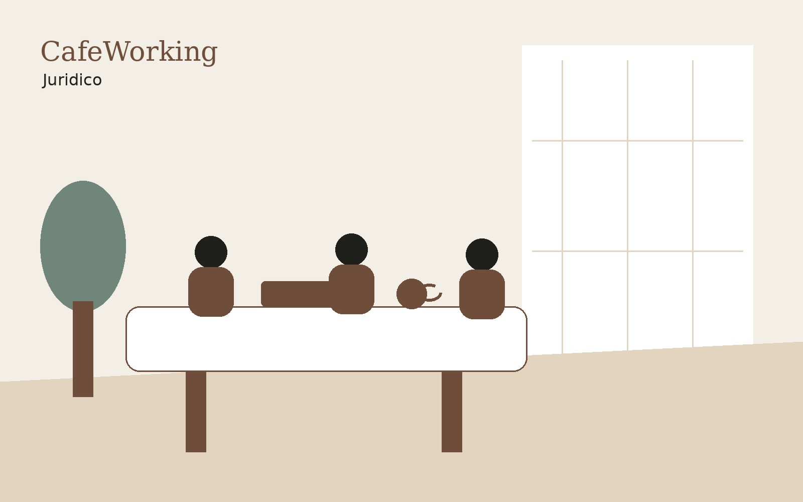

Endereço Fiscal
Endereço comercial em Belo Horizonte para registrar ou transferir o CNPJ, com recebimento e aviso de correspondências, recepção para receber clientes e sala de reunião quando precisar.
Ver endereço fiscal →O CafeWorking não é só espaço físico. Junto com o Grupo Ciatos, resolvemos o que a empresa precisa para existir e operar em ordem: endereço fiscal, abertura de CNPJ, contabilidade e apoio jurídico — tudo com o mesmo time e no mesmo endereço.
Serviços prestados pelo Grupo Ciatos, com atendimento presencial nas unidades de Belo Horizonte e online para o restante do Brasil.
Endereço comercial em Belo Horizonte para registrar ou transferir o CNPJ, com recebimento e aviso de correspondências, recepção para receber clientes e sala de reunião quando precisar.
Ver endereço fiscal →
Abertura de CNPJ com contador responsável: escolha do tipo societário, CNAE correto, regime tributário e registro na Junta Comercial e na Prefeitura de Belo Horizonte.
Ver abertura de empresa →
Contabilidade consultiva: obrigações e guias em dia, folha de pagamento, apuração de impostos e um contador que explica o que os números querem dizer sobre o seu negócio.
Ver contabilidade →
Contratos, questões societárias, consultas e prevenção de conflitos. Assessoria pensada para empresas em crescimento, que preferem resolver antes de virar processo.
Ver jurídico →A maioria das empresas resolve espaço com um fornecedor, contabilidade com outro e jurídico com um terceiro — e passa o mês repetindo a mesma informação para três lugares diferentes.
Não. Os serviços empresariais são independentes: você pode contratar apenas contabilidade, apenas endereço fiscal, ou combinar com um plano de espaço.
Sim. A contabilidade e a abertura de empresa são atendidas de forma digital em todo o Brasil. Já o endereço fiscal está vinculado às unidades de Belo Horizonte.
Sim. A alteração de endereço no contrato social e nos órgãos competentes é feita pela nossa equipe, junto com a atualização do cadastro na Receita Federal e na Prefeitura.
Depende da atividade e do município, mas na maior parte dos casos em Belo Horizonte o CNPJ sai em poucos dias úteis após a entrega da documentação. Atividades que exigem licenciamento específico levam mais tempo.
Abrir empresa, trocar de contador, transferir endereço ou organizar a rotina fiscal: mande a situação atual que respondemos com o caminho e o custo.